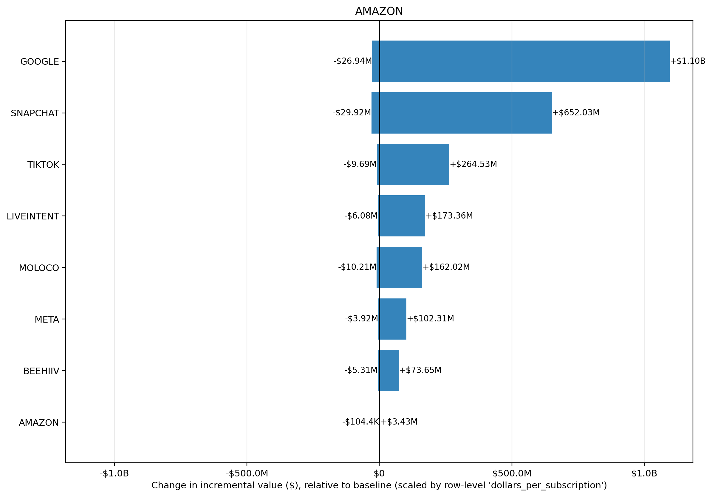

Input CSV: tornado_amazon_beehiiv_google_liveintent_meta_moloco_snapchat_tiktok.csv
Channels altered: AMAZON
Value Scaling: scaled by row-level 'dollars_per_subscription'
Selection objective: total_new_value
Best prior setup: KPI_TYPE: NA(mu=NA, sigma=NA) | KPI_TYPE_EFFECTIVE: NA(mu=NA, sigma=NA) | PRIOR_DESIGN_MODE: NA(mu=NA, sigma=NA) | PRIOR_GRID_TYPE: NA(mu=NA, sigma=NA) | REVENUE_PER_KPI: NA(mu=NA, sigma=NA) | ROI_PRIOR_OVERRIDES: NA(mu=NA, sigma=NA) | RUN_MODE: NA(mu=NA, sigma=NA) | STRUCTURAL_OVERRIDES: NA(mu=NA, sigma=NA) | SWEEP_TYPE: NA(mu=NA, sigma=NA) | TARGET_CHANNEL: NA(mu=NA, sigma=NA) | TWO_LAYER_ENABLED: NA(mu=NA, sigma=NA)
| prior_setup | total_new_value | delta_value_vs_baseline | delta_roi |
|---|---|---|---|
| KPI_TYPE: NA(mu=NA, sigma=NA) | KPI_TYPE_EFFECTIVE: NA(mu=NA, sigma=NA) | PRIOR_DESIGN_MODE: NA(mu=NA, sigma=NA) | PRIOR_GRID_TYPE: NA(mu=NA, sigma=NA) | REVENUE_PER_KPI: NA(mu=NA, sigma=NA) | ROI_PRIOR_OVERRIDES: NA(mu=NA, sigma=NA) | RUN_MODE: NA(mu=NA, sigma=NA) | STRUCTURAL_OVERRIDES: NA(mu=NA, sigma=NA) | SWEEP_TYPE: NA(mu=NA, sigma=NA) | TARGET_CHANNEL: NA(mu=NA, sigma=NA) | TWO_LAYER_ENABLED: NA(mu=NA, sigma=NA) | $4.09B | +$3.16B | 16433.11% |
| KPI_TYPE: NA(mu=NA, sigma=NA) | KPI_TYPE_EFFECTIVE: NA(mu=NA, sigma=NA) | PRIOR_DESIGN_MODE: NA(mu=NA, sigma=NA) | PRIOR_GRID_TYPE: NA(mu=NA, sigma=NA) | REVENUE_PER_KPI: NA(mu=NA, sigma=NA) | ROI_PRIOR_OVERRIDES: NA(mu=NA, sigma=NA) | RUN_MODE: NA(mu=NA, sigma=NA) | STRUCTURAL_OVERRIDES: NA(mu=NA, sigma=NA) | SWEEP_TYPE: NA(mu=NA, sigma=NA) | TARGET_CHANNEL: NA(mu=NA, sigma=NA) | TWO_LAYER_ENABLED: NA(mu=NA, sigma=NA) | $3.70B | +$2.77B | 14415.12% |
| KPI_TYPE: NA(mu=NA, sigma=NA) | KPI_TYPE_EFFECTIVE: NA(mu=NA, sigma=NA) | PRIOR_DESIGN_MODE: NA(mu=NA, sigma=NA) | PRIOR_GRID_TYPE: NA(mu=NA, sigma=NA) | REVENUE_PER_KPI: NA(mu=NA, sigma=NA) | ROI_PRIOR_OVERRIDES: NA(mu=NA, sigma=NA) | RUN_MODE: NA(mu=NA, sigma=NA) | STRUCTURAL_OVERRIDES: NA(mu=NA, sigma=NA) | SWEEP_TYPE: NA(mu=NA, sigma=NA) | TARGET_CHANNEL: NA(mu=NA, sigma=NA) | TWO_LAYER_ENABLED: NA(mu=NA, sigma=NA) | $3.30B | +$2.37B | 12340.84% |
| KPI_TYPE: NA(mu=NA, sigma=NA) | KPI_TYPE_EFFECTIVE: NA(mu=NA, sigma=NA) | PRIOR_DESIGN_MODE: NA(mu=NA, sigma=NA) | PRIOR_GRID_TYPE: NA(mu=NA, sigma=NA) | REVENUE_PER_KPI: NA(mu=NA, sigma=NA) | ROI_PRIOR_OVERRIDES: NA(mu=NA, sigma=NA) | RUN_MODE: NA(mu=NA, sigma=NA) | STRUCTURAL_OVERRIDES: NA(mu=NA, sigma=NA) | SWEEP_TYPE: NA(mu=NA, sigma=NA) | TARGET_CHANNEL: NA(mu=NA, sigma=NA) | TWO_LAYER_ENABLED: NA(mu=NA, sigma=NA) | $2.94B | +$2.01B | 10457.64% |
| KPI_TYPE: NA(mu=NA, sigma=NA) | KPI_TYPE_EFFECTIVE: NA(mu=NA, sigma=NA) | PRIOR_DESIGN_MODE: NA(mu=NA, sigma=NA) | PRIOR_GRID_TYPE: NA(mu=NA, sigma=NA) | REVENUE_PER_KPI: NA(mu=NA, sigma=NA) | ROI_PRIOR_OVERRIDES: NA(mu=NA, sigma=NA) | RUN_MODE: NA(mu=NA, sigma=NA) | STRUCTURAL_OVERRIDES: NA(mu=NA, sigma=NA) | SWEEP_TYPE: NA(mu=NA, sigma=NA) | TARGET_CHANNEL: NA(mu=NA, sigma=NA) | TWO_LAYER_ENABLED: NA(mu=NA, sigma=NA) | $2.91B | +$1.98B | 10309.92% |
| channel | delta_value | delta_roi |
|---|---|---|
| +$3.24B | 314.37% | |
| META | +$10.36M | 12.34% |
| AMAZON | -$39.5K | -2.51% |
| BEEHIIV | -$9.04M | -27.55% |
| MOLOCO | -$11.17M | -13.26% |
| LIVEINTENT | -$11.18M | -14.01% |
| TIKTOK | -$15.17M | -8.65% |
| SNAPCHAT | -$43.17M | -9.94% |
Largest sensitivity ranges are in GOOGLE (-$26.94M to $1.10B); SNAPCHAT (-$29.92M to $652.03M); TIKTOK (-$9.69M to $264.53M). Biggest upside scenario is GOOGLE at $1.10B, while the largest downside scenario is SNAPCHAT at -$29.92M. Bars crossing zero indicate the channel can either help or hurt depending on prior assumptions; wider bars indicate greater uncertainty and model sensitivity.
